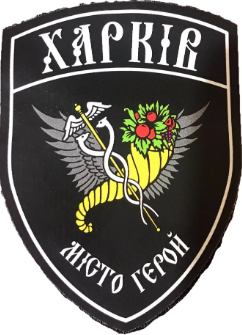

Що відомо про звання "МІсто-герой України"
6 березня та 24 березня 2022 року Президент України Володимир Зеленський встановив відзнаку "Місто-герой України" для відзначення подвигу, масового героїзму та стійкості громадян, виявлених у захисті своїх міст під час відсічі збройної агресії РФ проти України
місто Харьків
Під час широкомасштабного російського вторгнення Харків став одним із перших міст, яке прокинулося від вибухів зранку 24 лютого 2022 року й щодня продовжує зазнавати бомбардувань від окупантів.